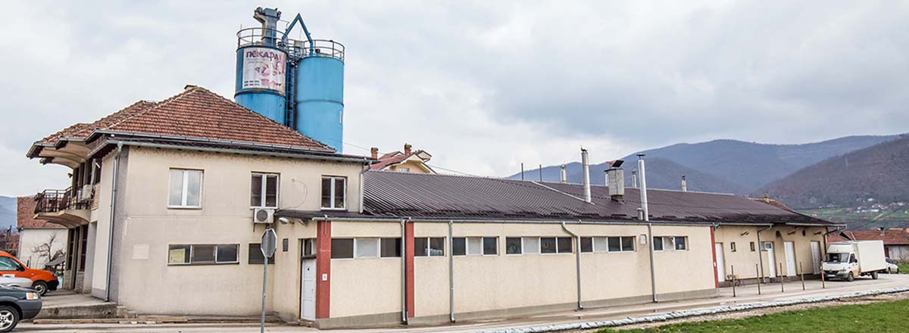
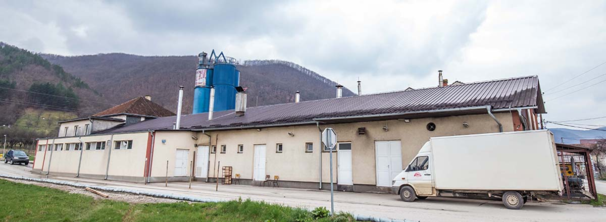

O firmi PGP Kolašin!
Proizvodno građevinsko preduzeće PGP KOLAŠIN osnovano je 1991. godine sa sedištem u Zubinom Potoku. Glavne aktivnosti naše kompanije mogu se podeliti u dva sektora, sektor građevinarstva i sektor industrijskog pekarstva.
Od samog osnivanja naš menadžment ima cilj da oslušne potrebe svojih potrošača i da na zahteve svojih potrošača odgovori kvalitetnim proizvodima. U želji da opravdamo poverenje naših potrošača, kroz višedecenijsko poslovanje trudimo se da pratimo svetske trendove u proizvodnji i prodaji pekarskih proizvoda.
Kroz stalne investicione cikluse, kroz ulaganja u nova postrojenja i opremu želimo da našim kupcima isporučimo proizvode u skladu sa svetskim standardima. Celokupnom našem menadžmentu postavljeni su ciljevi koji se ogledaju u konstantnom poboljšanju kvaliteta. Norma je poštovanje standarda, a kao satisfakcija koju dobijamo jesu kupci i potrošači koji svakodnevno ukazuju poverenje konzumirajući naše proizvode.
 Konačan cilj našeg menadžmenta jesu najkvalitetniji proizvodi na tržištu.
Naš odnos prema kvalitetu i bezbednosti hrane, prepoznatiljiv je na tržištu. Takav odnos krunisali smo međunarodnim HACCP sertifikatom bezbednosti hrane, međunarodnim ISO 9001:2005 sertifikatom, a pre nekoliko meseci, sa ponosom predstavljamo, naša pekara tj. naši proizvodi sertifikvani su međunarodnim ISO 22000:2005 seftifikatom.
Svi sertifikati garant su da se kvalitet i bezbednost naših proizvoda ne dovodi u pitanje.
Naša pekara je tokom svoje istorije razvila široku mrežu svoje maloprodaje, stavljajući poseban akcenat na dostizanju najvišeg nivoa poverenja između nas i prodavnica u kojima dostavljamo naše proizvode. Kao kompanija koja gleda u budućnost, poznato je da smo otvoreni za sve sugestije naših saradnika, a u cilju dostizanja što boljeg kvaliteta.
Osnovne pogodnosti koje nudimo našima saradnicima jesu širok asortiman proizvoda, mogućnost razvijanja namenskog proizvoda po želji saradnika i kupaca, sveži proizvodi u svakom trenutku, podrška našeg menadžmenta, prilagodljiva logistika i vreme dostave, a kao kruna svega nudimo uvek kvalitetan proizvod.